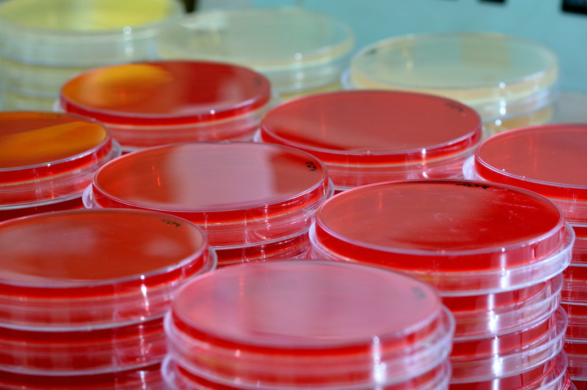

Hello there!
I am a medical microbiologist with knowledge in core microbiology, bioinformatics, sequencing, molecular biology, cancer research and clinical sciences. I am interested in the role of bacteria in the pathogenesis and progression of certain cancers. In addition, I have a strong interest in applying machine learning and programming techniques to scientific research.
I graduated from Medical Sciences, specialised in Biomedical Sciences in 2013 from Macquarie University, Australia. In 2015, I completed my Master of Research in Advanced Medicine (Macquarie University). I received my PhD in 2019 investigating the interplay of host immune response, breast implant properties and microbial factors in a newly characterised neoplasm - breast implant associated anaplastic large-cell lymphoma (BIA-ALCL) (Surgical Infection Research Group, SIRG at Macquarie University with A/Prof. Karen Vickery, Prof. Anand Deva). During my thesis review, I worked for 6 months as a research associate in the SIRG.
Currently, I am a Postdoctoral Research Fellow in the SIRG at the Faculty of Medicine and Health Sciences, Macquarie University where I continue the work from my PhD researching the role of bacterial pathogens and the microbiome in BIA-ALCL and in chronic implant infections.